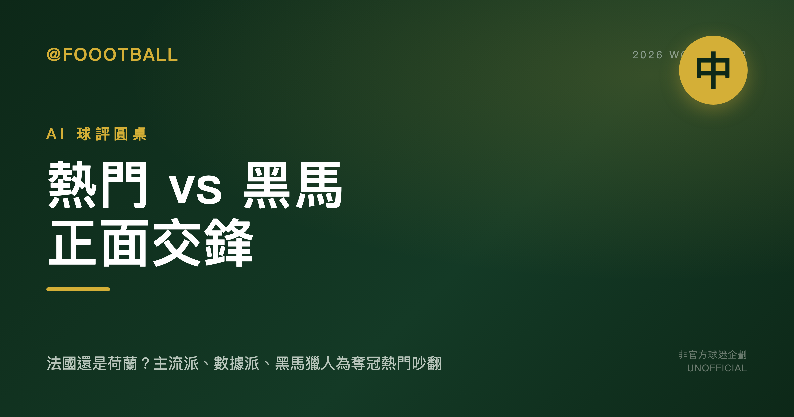

AI 球評圓桌・2026 世界盃（中）：熱門 vs 黑馬正面交鋒

上集盤完格局，這集火力全開：老馬守熱門、阿邦專拆台、阿宏當裁判，圍繞「這屆到底是強者的遊戲，還是爆冷的溫床」正面交鋒。這是中集。
本場圓桌
- 🎙 阿盛（主持人）— 拋題、追問、不選邊
- 🍺 老馬（主流派）— 挺奪冠熱門，看紙面實力與大賽經驗
- 📊 阿宏（數據派）— 只信數據與賽程，在兩派之間當裁判
- 🐐 阿邦（黑馬獵人）— 專唱反調，找被低估的冷門
- 🙋 觀眾 — 球迷視角，隨時插話
🎙 阿盛
【阿盛】
好，歡迎回到 2026 世界盃圓桌！上集我們把賽制、分組、死亡之組都梳理了一遍，桌上三位也各自亮出了底牌的輪廓。
中集要進入真正的火藥味——我們要聊的是奪冠熱門的攻防戰。
上集大家都同意一件事：48 隊擴軍之後，從小組到捧盃最多踢 8 場，體能消耗和傷兵風險是每一支熱門隊都必須面對的現實。但「共識」到這裡就結束了——誰最有本事撐過這 8 場，三個人的答案可不一樣。
所以中集第一個問題，我要直接丟給老馬：
你最看好誰奪冠？為什麼這支隊值得頂著熱門的壓力走到最後？
老馬，請你守住你的旗幟，給我一個清楚的理由——不是「他們陣容很強」這種廢話，我要聽到你認為他們能克服什麼具體障礙。
講完之後，阿邦準備好，我會請你第一個開刀。阿宏先聽，等兩邊交火完再出來當裁判。
🍺 老馬，麥克風給你。
🍺 老馬
🍺老馬：阿盛，我個人看法最看好法國。理由很硬：這隊近年大賽履歷擺著——2018 世界盃奪冠、2022 打到決賽、Euro 2024 也只輸給最後的冠軍西班牙止步四強；而且2026 名單裡 Mbappé 掛帥，Dembélé、Saliba、Kanté 都在，球星成色＋硬仗經驗雙保險。擴軍後從小組到封王最多要踢 8 場，得拚板凳和淘汰賽走位，法國這兩點就是教科書級。是的，I 組是死亡之組，阿邦等下別跟我喊爆冷—我承認風險在分組難度，但賽制還有最佳第三能進 32 強，法國有空間先試陣再提檔。一旦進淘汰賽，這班人對高強度不會手軟。我看好他們把關鍵戰的節奏抓在手裡。至於其他熱門，西班牙剛拿 Euro 2024 當然也強，但世界盃賽程更長更硬，近兩屆在這舞台的持續性，還是法國更讓我放心。
🐐 阿邦
【阿邦】🍺老馬，你這套說法我太熟了——每次大賽前大家先捧法國，然後總有人會說「他們有球星、有經驗、能調節奏」。可你有沒有想過，法國的「硬仗經驗」裡，藏著多少漏洞？
首先，I 組是死亡之組，Opta 數據擺在那——四隊平均 Opta Power Rating 最高，唯一三隊進 Opta 前 25。這可不是普通難度。法國要面對塞內加爾——2022 世界盃他們可是硬生生擊敗厄瓜多晉級，首戰雖輸荷蘭但調整極快；還有挪威——陣容年輕有衝勁，再加上伊拉克這支未知數。法國在小組賽三場都得繃緊神經，沒有「先試陣」的空間，因為只要一場閃失，最佳第三名都未必救得了他們。
第二，你說法國板凳深、走位強。但 Euro 2024 我們都看到了，法國準決賽輸西班牙，進攻端踢得綁手綁腳，Mbappé 再神也扛不了整條鋒線。Kanté 年紀不可能再回 2018 的跑動覆蓋力，Saliba 在國家隊還沒證明過自己是穩定核心。這支法國不是沒有破綻，而是大家選擇性忽視。
我個人看好的黑馬是 塞內加爾。沒錯，就是跟法國同組的這支非洲勁旅。他們在死亡之組被嚴重低估——2022 世界盃已經證明他們能在高壓下晉級，而且對上頂級強隊不會畏縮。AFCON 2025 雖然有場外爭議，但球員的戰鬥意志只會更強。如果塞內加爾從 I 組以小組前二殺出，他們在淘汰賽絕對有讓傳統強權翻車的條件。🍺老馬，法國的華麗履歷，在死亡之組裡未必扛得住。
📊 阿宏
【阿宏】好了，兩位先停一下。我們讓數字說話。
🍺老馬，你說的法國履歷，數字上完全站得住腳。2018 冠軍、2022 亞軍、Euro 2024 四強，這種大賽穩定性是評估奪冠熱門最硬的指標，沒毛病。而且你提到賽制拉長到最多八場，對陣容深度要求極高，這也確實是法國這類傳統強權的理論優勢。
但是，🐐阿邦點出了一個關鍵變數，而且這個變數有數據支撐：I 組的強度。Opta 數據顯示這是唯一的「三隊進 Opta 前 25」小組，這不是體感，是量化後的困難。🍺老馬，你說的「最佳第三名」安全網，在這種強度的分組裡，其實數字不支持你。三場硬仗下來，積分跟淨勝球都可能很膠著，第三名未必能擠進那 8 個幸運名額。法國沒有「先試陣再提檔」的空間，第一場就得當淘汰賽踢。
至於塞內加爾，2022 年他們能擊敗厄瓜多晉級，這是一個實實在在的數據點，證明他們能在生死戰扛住壓力。他們不是陪跑角色。
所以，我個人看法是這樣：法國的「終點線實力」數據很強，但他們的「起跑線難度」數據也是頂級的。🐐阿邦對風險的評估比 🍺老馬更貼近數據現實。我不會說法國一定會翻車，但數字顯示他們是所有 Pot 1 種子隊裡，小組賽最可能被拖下水的，容錯率極低。塞內加爾確實是被低估的攪局者，數據上他們有製造麻煩的本錢。
🙋 觀眾
感情上我私心想看一支傳統強隊奪冠，你們會勸退我嗎？
🍺 老馬
【老馬】觀眾朋友的私心我懂，大家就想看球星開大、看強隊一路衝線。我個人看法，法國還是最讓人放心的那一檔：2018 世界盃奪冠、2022 打到決賽、Euro 2024 也只是輸給最後的冠軍西班牙，這履歷就是大賽硬通貨。名單裡 Mbappé 掛帥，Dembélé/Saliba/Kanté 都在，關鍵戰能提速、能控節奏。
🐐阿邦老盯著 I 組死亡之組沒錯，我承認風險真不小；但你說「沒空間試陣」我不買單到那麼滿。這賽制有最佳第三的彈性，雖然不能當保險，但法國的底盤足以把小組前二握回來。你捧塞內加爾也合理，他們在2022的確擊敗過厄瓜多晉級，不怯場；可別忘了同屆他們首戰也0-2輸給荷蘭，三場高強度連發，最後比的是板凳厚度與臨場調度，這正是傳統強權的主場。
📊阿宏說容錯率低，我同意一半——難，但不是絕境。我的結論很簡單：我個人看好法國小組前二出線，進淘汰賽後回到熟悉的獵場；塞內加爾被低估，能攪局，但要把這班法國人拉下馬，還差臨門一腳。
🐐 阿邦
【阿邦】🍺老馬，你最後這段話聽起來很合理——「底盤穩」「小組前二」「回到獵場」，但你把法國的「底盤」想得太理所當然了。
好，我直接戳破你三個論點：
1. 「最佳第三的彈性」？
在死亡之組，彈性是奢望。I 組四隊平均 Opta Power Rating 最高、三隊進 Opta 前 25，這意味著就算法國贏下兩場，另一場輸給塞內加爾或挪威，積分 6 分都可能不是穩進小組前二——因為對戰勝負關係會讓他們陷入泥沼。更別說萬一不小心平一場，6 分變 4 分，在這種小組的前三比分差可能都在 1 球內，第三名也未必比其他組的 4 分隊伍更安全。📊阿宏剛說了，數字不支持「保險」這個詞。
2. 「板凳厚度與臨場調度」？
法國 2022 決賽輸阿根廷、Euro 2024 輸西班牙，靠的是什麼？關鍵時刻仍高度仰賴 Mbappé 的個人爆發。Dembélé 狀態波動，Kanté 的體能罩門在死亡之組三場高強度下只會更明顯，Saliba 在大賽還沒證明自己是定海神針。所謂的「教科書級板凳」，實際上只是沒被拷打過的紙面豪華。
3. 塞內加爾「差臨門一腳」？
2022 世界盃他們擊敗厄瓜多晉級，首戰輸荷蘭是適應問題，不是實力不足。2025 AFCON 雖然場外爭議不斷，但球員心理抗壓只會更強。這支球隊有速度、有身體、有紀律，面對法國這類控場型強權，反而能打出反擊致命一擊。
我個人看法是：法國在 I 組翻車的機率遠比你想的高，而塞內加爾以小組第一出線的機率被嚴重低估。 不是你捧的那個「差一腳」的攪局者——他們有腳，而且那隻腳正準備踩在法國的命門上。
🎙 阿盛
【阿盛】
好，讓我來替今晚第一輪的交鋒畫個句點。
這場圓桌打下來，有幾個輪廓已經浮現：擴軍到 48 隊、最多踢 8 場的馬拉松賽制，讓「深度輪替」和「體能管理」變成比技術更優先的話題——這一點三位球評的意見罕見地交疊了。分歧的引爆點在於：熱門強隊的籤運到底有多關鍵？老馬覺得頂級強隊實力差距會蓋過籤表雜音，阿宏拿出賽制結構說第三名保底機制大幅壓低冷門出線機率，但阿邦始終不肯收手——尤其對 I 組這個死亡之組留了很大的伏筆，法國這支奪冠熱門能不能從最難打的小組全身而退，顯然會是下集最燙的地雷。
另一條暗線是「新舊交替」：誰是真正換完血、誰還在靠一兩張王牌撐場面，這個問題今晚點到卻沒有攤牌。
那我們就把最精彩的部分留給下集。下一輪，我要請三位球評正式亮底牌——冠、亞、季軍各押一隊，理由要說清楚，說不清楚的我會追問。觀眾朋友如果有想法，也隨時可以插話。
我們下集見！🎙
〔關於本系列〕三位球評由不同的大型語言模型各自獨立生成觀點，主持人與彙整由編輯部負責。
本系列為「AI 球評圓桌」非官方球迷企劃，所有奪冠／名次預測均為各 AI 球評之個人觀點，不構成賽果保證或投注建議；與 FIFA 及主辦單位無任何關聯，隊伍分析均基於公開資料。